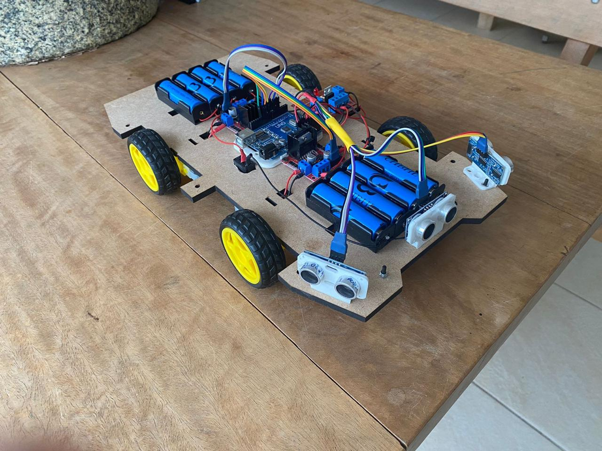

Temática
O projeto foi desenvolvido com base no conceito de Cyberpunk, buscando oferecer uma visão tecnológica que reflete a complexidade dos ambientes urbanos. Considerando que o carrinho foi projetado para participar de uma competição de carros autônomos, realizada ao ar livre na AARC do ABC, diversos fatores que simulam um ambiente urbano precisaram ser levados em consideração, tais como o relevo do terreno, as condições climáticas e a limitação de espaço a fim de se obter sucesso na prova.

Design da bolha
Inspirada no modelo de carro Mizutani Shion, um cupê esportivo, nossa bolha adota a estética de um dos carros do jogo Cyberpunk 2077, um jogo de ação e RPG ambientado numa metrópole distópica, aproveitando o gancho de nossa temática. O desenho foi projetado no software de modelagem 3D Onshape, e impresso em impressora 3D.
Design do chassi
Nosso chassi foi projetado no software de modelagem 3D Onshape, e impresso na impressora de corte à laser, em MDF, que oferece a combinação ideal entre leveza e resistência estrutural. Ele permitiu que o chassi suportasse os componentes eletrônicos com estabilidade, além de permanecer resistente durante testes e experimentações.
Principais componentes e funcionamento

Arduíno UNO: Atua como cérebro, programado para controlar as ações do robô com base nos sinais recebidos dos sensores. O cabo USB permite conectar a placa ao computador para programá-la, e os pinos facilitam a conexão de outros componentes.
Sensor de Distância Ultrassônico HC-SR04: O sensor ultrassônico detecta os obstáculos na frente do robô. Ele emite ondas ultrassônicas de 40 kHz que ao refletirem em objetos próximos e retornam ao sensor, que envia um pulso ao Arduino, indicando o tempo que a onda levou para ir e voltar e então ao sensor calcular a distância até os obstáculos e desviar deles.


Motor Shield L293D Ponte H: Usado para controlar a direção e a velocidade dos motores. Ele usa a ponte H, que permite que o motor DC gire tanto no sentido horário quanto anti-horário, essencial para o controle do movimento do robô.
Fonte de Energia: O robô é alimentado por uma bateria de 9V, responsável por fornecer energia à placa Arduino, aos motores e aos outros componentes. A conexão é feita através de um plug com saída P4, que liga a bateria diretamente à placa, garantindo um fornecimento de energia confiável. Para ligar e desligar, uma chave gangorra de 2 terminais atua como interruptor principal, controlando o fluxo de energia.

Código
// Carrinho em C
#define LADO_ESQUERDO_T A0
#define LADO_ESQUERDO_E A1
#define LADO_FRENTE_T A2
#define LADO_FRENTE_E A3
#define LADO_DIREITO_T A4
#define LADO_DIREITO_E A5
// Ponte H e Motores
#define MOTOR_FRT_D 10
#define MOTOR_FRT_E 11
#define MOTOR_TRS_D 5
#define MOTOR_TRS_E 6
#define RE_FRT_D 8
#define RE_FRT_E 12
#define RE_TRS_D 4
#define RE_TRS_E 7
#define VELOCIDADE_DO_SOM 0.00034029
void setup() {
pinMode(LADO_ESQUERDO_T, OUTPUT);
pinMode(LADO_ESQUERDO_E, INPUT);
pinMode(LADO_FRENTE_T, OUTPUT);
pinMode(LADO_FRENTE_E, INPUT);
pinMode(LADO_DIREITO_T, OUTPUT);
pinMode(LADO_DIREITO_E, INPUT);
digitalWrite(LADO_ESQUERDO_T, 0);
digitalWrite(LADO_FRENTE_T, 0);
digitalWrite(LADO_DIREITO_T, 0);
Serial.begin(9600);
Serial.print("1.0.11");
}
void loop() {
float distanciaEsquerda = medirDistancia(LADO_ESQUERDO_T, LADO_ESQUERDO_E, "Esquerdo");
float distanciaFrente = medirDistancia(LADO_FRENTE_T, LADO_FRENTE_E, "Frente");
float distanciaDireita = medirDistancia(LADO_DIREITO_T, LADO_DIREITO_E, "Direito");
if (distanciaFrente < 20) {
darRe();
} else {
ajustarPosicao(distanciaEsquerda, distanciaDireita);
}
}
float medirDistancia(int triggerPin, int echoPin, String lado) {
digitalWrite(triggerPin, 1);
delayMicroseconds(10);
digitalWrite(triggerPin, 0);
float tempo = pulseIn(echoPin, 1);
float distancia = (tempo * VELOCIDADE_DO_SOM) / 2 * 100;
Serial.print("Distancia em ");
Serial.print(lado);
Serial.print(": ");
Serial.print(distancia);
Serial.println(" cm");
return distancia;
}
void ajustarPosicao(float distanciaEsquerda, float distanciaDireita) {
if (distanciaEsquerda < 25 && distanciaDireita >= 25) {
direita();
} else if (distanciaDireita < 25 && distanciaEsquerda >= 25) {
esquerda();
} else {
frente();
}
}
void darRe() {
Serial.print("RÉ");
digitalWrite(MOTOR_FRT_D, 0);
digitalWrite(MOTOR_FRT_E, 0);
digitalWrite(MOTOR_TRS_D, 0);
digitalWrite(MOTOR_TRS_E, 0);
digitalWrite(RE_FRT_D, 1);
digitalWrite(RE_FRT_E, 1);
digitalWrite(RE_TRS_D, 1);
digitalWrite(RE_TRS_E, 1);
delay(300);
pararMotores();
}
void direita() {
Serial.print("DIREITA");
digitalWrite(MOTOR_FRT_D, 0);
digitalWrite(MOTOR_FRT_E, 1);
digitalWrite(MOTOR_TRS_D, 0);
digitalWrite(MOTOR_TRS_E, 1);
digitalWrite(RE_FRT_D, 1);
digitalWrite(RE_FRT_E, 0);
digitalWrite(RE_TRS_D, 1);
digitalWrite(RE_TRS_E, 0);
delay(300);
pararMotores();
}
void esquerda() {
Serial.print("ESQUERDA");
digitalWrite(MOTOR_FRT_D, 1);
digitalWrite(MOTOR_FRT_E, 0);
digitalWrite(MOTOR_TRS_D, 1);
digitalWrite(MOTOR_TRS_E, 0);
digitalWrite(RE_FRT_D, 0);
digitalWrite(RE_FRT_E, 1);
digitalWrite(RE_TRS_D, 0);
digitalWrite(RE_TRS_E, 1);
delay(300);
pararMotores();
}
void frente() {
Serial.print("FRENTE");
digitalWrite(MOTOR_FRT_D, 1);
digitalWrite(MOTOR_FRT_E, 1);
digitalWrite(MOTOR_TRS_D, 1);
digitalWrite(MOTOR_TRS_E, 1);
digitalWrite(RE_FRT_D, 0);
digitalWrite(RE_FRT_E, 0);
digitalWrite(RE_TRS_D, 0);
digitalWrite(RE_TRS_E, 0);
delay(200);
pararMotores();
}
void pararMotores() {
digitalWrite(MOTOR_FRT_D, 0);
digitalWrite(MOTOR_FRT_E, 0);
digitalWrite(MOTOR_TRS_D, 0);
digitalWrite(MOTOR_TRS_E, 0);
digitalWrite(RE_FRT_D, 0);
digitalWrite(RE_FRT_E, 0);
digitalWrite(RE_TRS_D, 0);
digitalWrite(RE_TRS_E, 0);
}